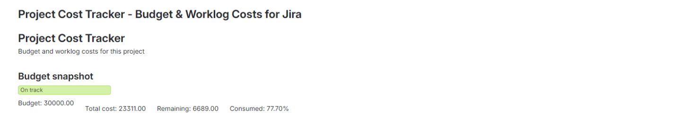
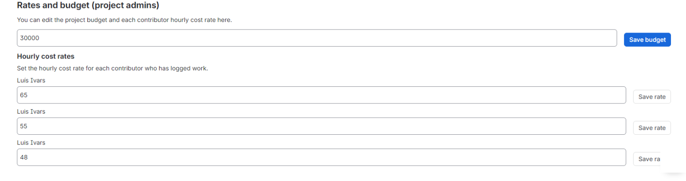
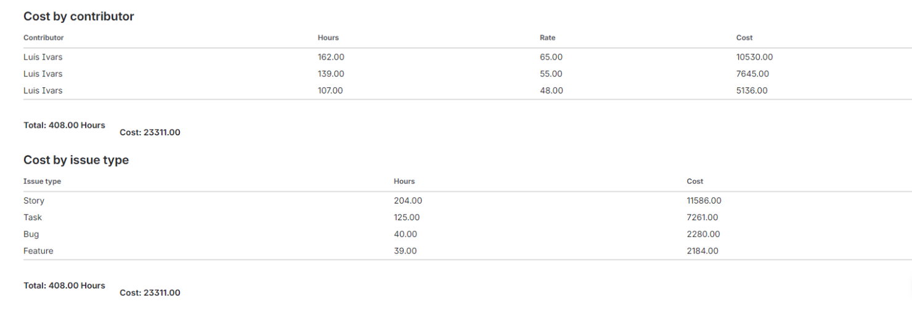
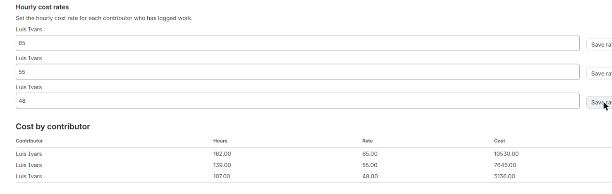
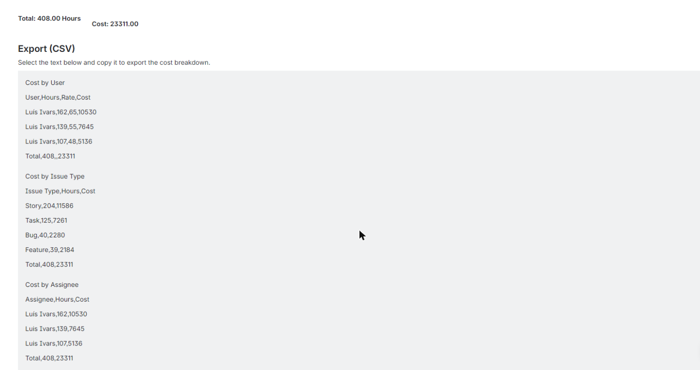

Project Cost Tracker puts rates, budget and the full cost table on one project page in Jira. Set an hourly rate per teammate, set a project budget, and watch budget remaining, percent consumed and a red/amber/green status update automatically from real worklogs, with no separate app sections to hunt through.





Project Cost Tracker puts the whole picture on one project page. Each teammate's hourly cost rate and the project's budget amount are stored in Forge KVS and edited inline, right on the project page. Only users holding the Administer Projects permission for the current project can see or edit the Rates panel (checked server-side against Jira's permissions API); everyone else sees cost totals only, so sensitive rate data stays restricted without a separate admin screen. The app lists worklogs for the current project straight from the Jira REST API and computes cost per user as logged hours times that user's rate, in a single table. Above it, a budget vs actual summary shows total computed cost, budget remaining and percent consumed, with a RAG (red/amber/green) indicator built for a five-second executive read, not a dashboard you need training to use. Two further sortable tables break the same cost down by issue type and by assignee, each with totals, so you can see where budget is actually going without exporting anything to a third-party tool. When you do want the numbers elsewhere, the cost breakdown is also shown as plain CSV text in a labelled read-only block: select it, copy it, paste it into any spreadsheet. Because every worklog read and every cost calculation happens inside Atlassian, with no external egress, Project Cost Tracker is Runs on Atlassian eligible, a data-residency and trust guarantee that matters for finance-sensitive cost data. The app is free to use for teams of up to 10 users at launch.
Stop hunting across tabs and reports: set hourly rates, see budget remaining and review the full cost table from a single project screen.
A single red, amber or green indicator shows budget health at a glance, so finance and leadership get a decision-ready view instead of digging through spreadsheets.
Sortable tables break project cost down by issue type and by assignee with totals, and a ready-to-copy CSV block takes the breakdown straight into a spreadsheet.
Who can set hourly rates and the project budget?
Only users with the Administer Projects permission for the current project can open and edit the Rates panel, checked server-side against Jira's permissions API. Everyone else sees cost totals only.
Does this app send our worklog or cost data outside Atlassian?
No. Every worklog read and every cost calculation happens inside Atlassian, which is why the app qualifies for Runs on Atlassian.
How much does it cost?
Free at launch for teams of up to 10 users, with no feature gating during that period.
Can I export the cost breakdown?
Yes. The breakdown is shown as plain CSV text in a labelled read-only block that you can select and copy into any spreadsheet.
How is cost per user calculated?
Cost per user is that user's hourly rate multiplied by the hours they logged on the project, pulled live from Jira worklogs via the REST API.
The app reads Jira data with the permissions of the person using it, and only:
Everything runs on Atlassian Forge and no data leaves Atlassian. Details in the privacy policy.
For questions, issues, or feature requests: